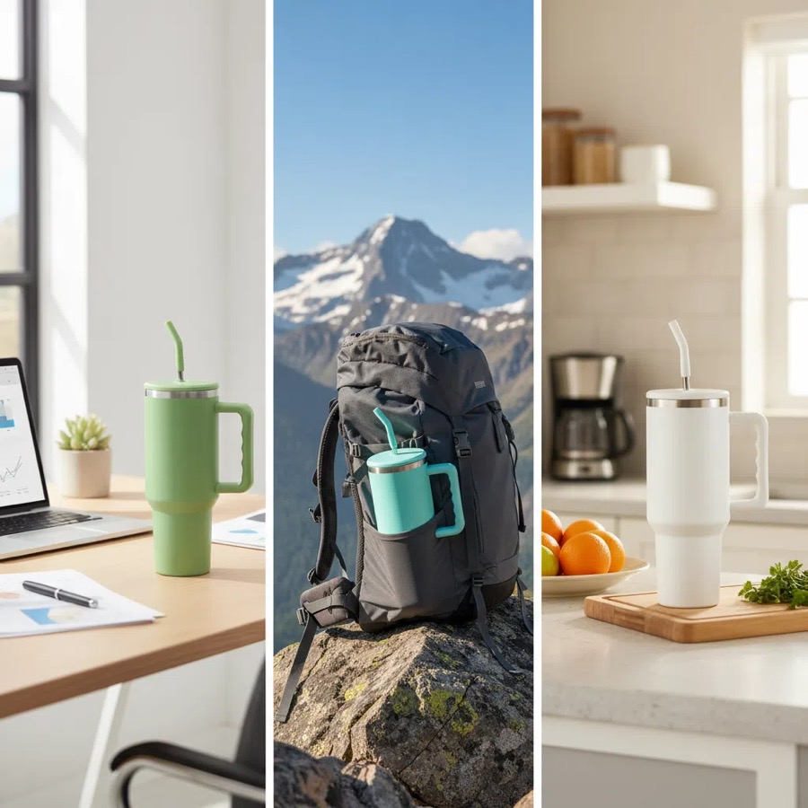
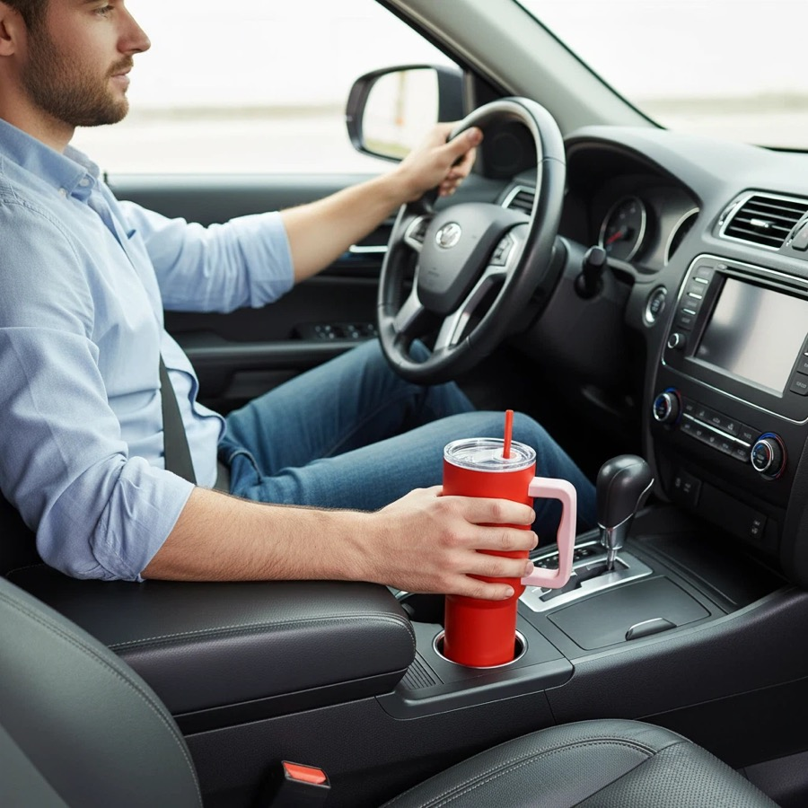
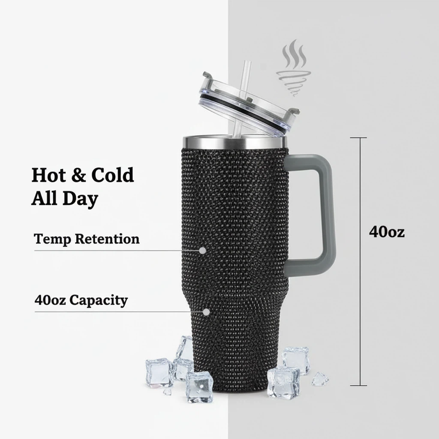

40oz Tumbler Manufacturing And Bulk Customization
Buyers comparing handle tumblers, straw tumblers and trend-led 40oz styles for marketplace or gift programs.
Custom drinkware sourcing guide
HDS Drinkware, the export brand of Shanxi Huandingsheng Industry and Trade Co., Ltd., coordinates 40oz tumbler manufacturing and bulk customization for Amazon sellers, TikTok Shop sellers, Shopify brands, gift companies and distributors. This page covers the product, MOQ, sample, packaging, QC and shipping decisions specific to that buying intent.



Buyers comparing handle tumblers, straw tumblers and trend-led 40oz styles for marketplace or gift programs.
This page should not compete with general water bottle pages; it is focused on 40oz tumbler projects. Selected stock-based logo projects can start from 200 pcs; final MOQ and scope are confirmed in the quotation.
40oz handle tumblers, straw tumblers, gradient tumblers and rhinestone gift tumblers can be discussed by capacity, color, finish, lid, accessory, packaging and destination market. HDS helps buyers compare practical options instead of pushing a single retail-style SKU.
MOQ starts from 200 pcs for selected custom drinkware projects. The final MOQ depends on material, color, logo method, packaging, sample needs and current supply chain availability.
Selected models can use an 18/8 (304) stainless steel inner wall with double-wall vacuum construction, plus PP or other food-contact lid, handle, gasket and straw components. Exact steel grade, lid material, coating system and available documentation must be confirmed for the quoted model.
Logo customization support includes laser engraving, silk screen printing, UV printing, heat transfer, labels and packaging logo placement. The best method depends on product surface, artwork colors and buyer channel.
A project-specific 40oz tumbler inspection plan can cover insulation checks, handle review, coating appearance or adhesion, logo position, lid fit, leakage checks, straw clearance, packing and carton marks. The buyer and HDS should confirm the sample and inspection scope before bulk production.
Product comparison
| Option | Best For | Customization Focus | Buyer Notes |
|---|---|---|---|
| Entry test order | New sellers and first projects | Stock color, simple logo, standard packing | Useful when the buyer needs to validate demand with lower inventory pressure. |
| Private label order | Amazon sellers, TikTok Shop sellers, Shopify brands, gift companies and distributors | Logo, color, packaging, barcode and carton marks | Better for buyers who need a repeatable product line. |
| Gift packaging order | Gift companies and corporate buyers | Gift box, insert, card, tote bag and bundle planning | Presentation and sample approval should be confirmed early. |
| Wholesale repeat order | Distributors and wholesale buyers | Stable product, mixed colors, cartons and shipping plan | Best when reorder timing and carton data matter. |
Direct answer
Yes. Selected stock-model 40oz tumblers can start from 200 pieces with a simple logo and standard packaging. The confirmed MOQ depends on color allocation, decoration method, box design and current stock. Buyers should approve the exact handle, lid, coating, logo position and packing sample before bulk production.
Send one reference photo, required quantity, destination country, logo file and packaging plan. HDS will separate the product, decoration, sample, packaging and shipping scope so buyers can compare like-for-like landed cost instead of a headline unit price.
Buyer verification
This checklist separates facts that should be verified for the selected SKU from general marketing claims.
| Decision | Confirm in Quote | Verify Before Bulk |
|---|---|---|
| Material | Inner-wall steel grade, outer material, lid and gasket material | Specification sheet or available supplier documentation for the quoted model |
| Fit and dimensions | Capacity, height, base diameter, lid diameter and handle clearance | Physical sample measurements |
| Logo | Method, size, position, color count and artwork format | Logo sample or approved production proof |
| Performance | Agreed insulation, lid-fit, leakage and handle checks | Signed sample and project-specific inspection checklist |
| Packaging | Inner box, accessories, barcode, carton quantity and carton marks | Packaging sample or packing photo before shipment |
| Landed cost | Product, logo, packaging, sample and freight shown separately | Final carton dimensions, gross weight, destination and Incoterm |
MOQ decision table
These are planning routes, not universal price promises. The written quotation controls the final scope.
| Order Path | Typical Starting Point | Best Fit | Main Cost Drivers |
|---|---|---|---|
| Stock model + simple logo | From 200 pcs on selected models | Market tests and promotional orders | Color allocation, logo position, setup and standard box |
| Private-label retail pack | Confirmed after artwork and box review | Amazon, Shopify and distributor programs | Printed box MOQ, barcode, insert, carton size and proofing |
| Custom color or finish | Model- and coating-dependent | Established brands and repeat orders | Pantone matching, coating setup, sample approval and color quantity |
| New mold or structural change | Project-specific | Differentiated product development | Tooling, engineering review, testing and longer development timing |
| Method | Best Use | Strength | Notes |
|---|---|---|---|
| Laser engraving | Stainless steel and premium gifts | Durable, clean and professional | Good for corporate and private label positioning. |
| Silk screen printing | Simple logos and larger runs | Clear and cost-effective | Works best with simpler artwork. |
| UV printing | Color logos and detailed artwork | Better visual detail | Sample review is recommended before bulk order. |
| Label or packaging branding | Fast tests and gift sets | Flexible and practical | Useful when buyers want branding without complex setup. |
| Packaging | Best For | Support Details |
|---|---|---|
| Standard box | Samples and wholesale orders | Basic protection and practical carton packing. |
| Color box | Amazon, Shopify and retail channels | Can support barcode, brand information and product presentation. |
| Gift box | Corporate gifts and holiday programs | Can coordinate inserts, cards, sleeves and custom box print. |
| Custom bundle packaging | Gift companies and promotional buyers | Can combine drinkware, cards, tote bags, labels and carton marks. |
Custom 40oz Tumbler Supplier for Low MOQ Logo Orders is intended for Amazon sellers, TikTok Shop sellers, Shopify brands, gift companies and distributors. Buyers comparing handle tumblers, straw tumblers and trend-led 40oz styles for marketplace or gift programs. HDS uses the buyer's channel, quantity, destination and launch timing to narrow the product, sample, packaging and shipping route.
Quote and sample checklist
Send these details together and the sales team can compare realistic product, logo, packaging and shipping options faster.
MOQ for selected custom 40oz tumbler supplier for low moq logo orders projects can start from 200 pcs. Final MOQ depends on product style, material, color, logo method, packaging and current supply availability.
HDS can discuss 40oz handle tumblers, straw tumblers, gradient tumblers and rhinestone gift tumblers by capacity, material, color, finish, lid, accessories, logo method and packaging requirement.
Material options include stainless steel, powder coated stainless steel and decorated tumbler options. The suitable option depends on the target market, use case, compliance request and price range.
Send a product photo or reference link, quantity, logo file, packaging request, destination country and target delivery time. These details help HDS prepare a more relevant quotation.
This page is written for Amazon sellers, TikTok Shop sellers, Shopify brands, gift companies and distributors who need custom drinkware sourcing, logo customization, packaging support and export coordination from China.
Stainless steel tumblers | TikTok Shop drinkware | Low MOQ custom drinkware | Logo method guide
Send your product photo, quantity, logo requirement, packaging request and destination country. HDS will help recommend suitable product options, logo methods, packaging solutions and shipping terms for your project.